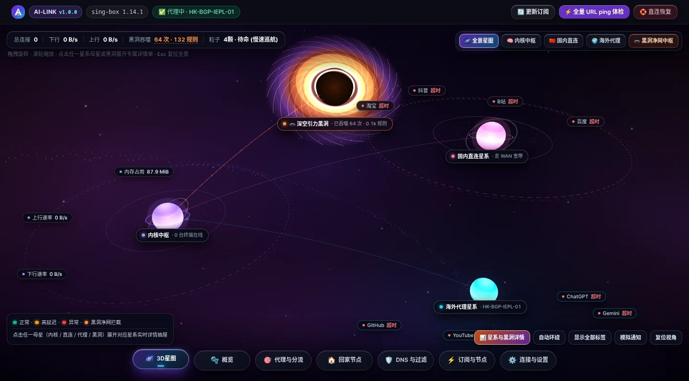

告别频繁跳点断流与旁路卡死
真正“节点永不断连”的智能网关
AI-LINK (ai-link-openwrt) v1.0.3 正式版 将高性能 sing-box 1.12+/1.14+ 内核、独创 1~5 组瀑布流自动节点池与粘性状态锁、内核态 nftables 硬件级国内零损耗直连（自动挂载单臂旁路对称 NAT 防断网）、多协议免证书回家服务（HomeLink） 以及 全息 3D 星图与深空引力黑洞可视引擎 融为一体。小白三分钟开箱即用，全链路状态可观测。
curl -fsSL https://ai-link-official.pages.dev/install.sh | sh

🛡️ 节点永不断连（默认不断不切）
独创 1~5 组优先级自动池 + 粘性状态锁。只要当前工作节点健康，哪怕其他节点快 50ms 也绝不跳点断流；真故障时从双组热备池 <10ms 内存态秒切。
🚀 国内硬件级直连 & 旁路防断网
大陆 IP (@cn_ip4/@cn_ip6) 在 nftables 层直接放行不进内核；自动挂载同网段 srcnat masquerade + be_liberal=1 根治单臂旁路断流。
🏠 免证书回家与科学上网合一
内置一键创建 VLESS-Reality 与 Hysteria2（自动绑定 pinSHA256 指纹）回家节点，支持单节点独立三模式权限隔离与实时会话监控。
♻️ 17/17 无损备份与零残留卸载
全状态字节级快照备份（含 PBKDF2 密码哈希），恢复出厂后再恢复 17/17 项 MD5 100% 一致；停止/卸载对称回收全部路由与内核参数，0 残留。
自动节点池与自动分流卡片 —— “节点永不断连”的底层逻辑、实现与用法
彻底剖析传统插件为什么频繁断流卡死，以及 AI-LINK 如何通过五重状态机与 1~5 组瀑布流节点池实现真正的“永不断连”。
🔥 4.1 为什么传统代理插件总是“断连、卡死、跳点”？（五大顽疾 vs. AI-LINK 根治方案）
传统痛点：每隔 180 秒测一次，节点 B 比当前节点 A 快 5ms 就立即切换。公网出口 IP 突变导致 ChatGPT 报错 network error、Claude 封号掉登录、SSH 断线、网游瞬移掉线。
✅ AI-LINK 解法：evaluate_single_auto_node() 默认启用粘性状态锁（🔒不断不切）——只要当前节点 state=="ok" 且 CDN 握手正常，哪怕别的节点快 50ms 也 100% 锁定原节点绝不跳点！
传统痛点：机场中转机存活但落地机欠费、被目标站返回 403、或拉取 Google CDN (dl.google.com) 时 TLS 卡死。传统测速看它秒回错误包误以为延迟极低切进去，结果全屋转圈。
✅ AI-LINK 解法：L4+L7 HTTP 204 真活检验 + Google CDN 双目标验证 + OpenAI/Netflix 业务指纹校验，把“有响应无正文”的半死节点 100% 拒之门外。
传统痛点：跨国链路偶发 1 个 UDP/TCP 包超时完全正常，传统插件单次超时立刻判死切换，反而从优质专线切到了劣质备选线。
✅ AI-LINK 解法：_verify_node_cdn_dual_target() 同时检测 dl.google.com (200) 与 play.google.com (204)，必须双目标同时失败且连续 2 次（fail_streak >= 2）才判死，零误杀！
传统痛点：对订阅内 300~800 个节点周期性全量并发测速，每天白跑数 GB 流量，还常被机场判定为爬虫滥用封停订阅。
✅ AI-LINK 解法：独创双组去重省流探测——后台仅探测“当前工作组 ∪ 组1主力组”（同名节点去重只测1次），池外数百节点休眠零流量，省流 75% 以上！
传统痛点：把自定义分流组绑定到某个具体节点或国家后，一旦该节点挂掉（ERR），传统插件一直死守坏节点直到人工进后台改配置。
✅ AI-LINK 解法：无论分流卡片绑的是自动池、国家优选还是固定单节点，20s 看门狗一旦发现原出口死掉，立即自动热切至同地区最快 ok 节点并标注 ⚡原出口不可用·已自动重选。
传统痛点：机场常带“⚡高速自动/地区随机”节点，被选入固定地区池后每次新建连接出口国家都在乱跳。
✅ AI-LINK 解法：_is_random_region_node() 自动赋予 1.28x 延迟折算系数（28% 容差优先固定地区专线），并自动从节点库提权健康专线节点入池自愈！
点击下方场景按钮，观察自动节点池如何应对延迟波动、偶发丢包、节点故障与主力机房恢复
primary_recover_streak)：0 / 2
系统正在使用组 1 的 US-IEPL-01 (42ms)。后台双组探测器仅探测组 1（因为当前工作组就是组 1），组 2 完全休眠不耗机场流量。只要 US-IEPL-01 保持 ok，绝不主动切换出口。
# evaluate_single_auto_node() 决策路径：
smart_en = False # 默认 🔒不断不切
cur_in_group = "US-IEPL-01" (state="ok", cdn_tls_ok=True)
chosen = cur_in_group # 100% 粘性锁定原节点，零跳点！4.3 自动节点池三大实战黄金编排模板（点击切换查看）
• ⏫ 立即回切：当处于组 2 备选工作、您知道组 1 主力已恢复且不想等冷却期时，点击立即单轮探测组 1 并秒切回主力组。
• ⚡ 双组探测：立即手动对“当前工作组 + 组1主力组”执行一次去重 L7 HTTP 204 体检并重算评分。
• 📊 质量排行：查看池内节点近 20 次探测的滑动窗口评分（0.4×全窗 + 0.6×近5次成功率）、抖动率 CV 与火花线。
• ⚠️ 建议剔除 -> 替换：连续 5 次 <50 分且低于组均分 18 分时点亮（只标记不强切），点击“替换”一键用同国 ≥70 分池外节点平替。
4.4 自动分流卡片（Shunt Cards）的三种绑定模式与自由编排
除首尾固定的“国内直连”与“全局兜底”外，所有业务分流卡片（AI、流媒体、Google、GitHub、Telegram、游戏及自定义卡片）均支持以下三种出口绑定，且全部接入 20 秒死节点自动逃生看门狗：
将分流卡片交给 1~5 组自动节点池托管，获得完整的跨机房瀑布流容灾、双组省流热备与粘性不断不切保护。
无需建池，直接选如 🇸🇬 新加坡 · 自动优选。系统自动在该国 ok 节点中粘性锁定当前存活出口；一旦原节点死掉，20 秒看门狗自动热切至同国最快节点并标注 ⚡原出口不可用·已自动重选。
正常时 100% 走该固定节点；一旦该节点彻底失联（ERR），自动触发同地区健康节点临时逃生接管，绝不让业务卡死断网！
点击卡片右上角 ↑ / ↓ 可自由调整匹配优先级；点击 ✏️ 编辑规则 可直接追加自定义域名/IP；切换卡片出口通过 Clash API 内存态在 约 2 秒内即时生效（无需重启内核）。
环境配置需求与三大主流网络拓扑指南（小白与进阶必读）
单臂旁路由标准接线与 OpenWrt 接口设置
主路由（如硬路由 192.168.1.1）负责 PPPoE 拨号，OpenWrt 旁路由（192.168.1.2）仅用网线插在主路由 LAN 口：
- 旁路由 LAN 口 IPv4 设置：IPv4 设为
192.168.1.2，网关填主路由192.168.1.1，自定义 DNS 填192.168.1.1或223.5.5.5，DHCP 勾选 “忽略此接口”。 - 旁路由 LAN 口 IPv6 设置：将路由通告服务（RA）、DHCPv6 服务、NDP 代理全部设为 “已禁用”（防止与主路由抢发 RA）。
- 终端网关指向：在主路由 DHCP 中将默认网关（Option 3）和 DNS（Option 6）下发为
192.168.1.2，或在需要代理的设备上手动填写。
为什么其它插件在单臂旁路下经常微信发不出图、国内网页卡死，而 AI-LINK 不会？
同网段单臂旁路由下，国内直连包去程经旁路由转发给主路由，而主路由回包直接走二层交换机发回终端，导致旁路由 conntrack 只看到 SYN 看不到 SYN-ACK，30 秒后丢弃连接并发送 RST。
table inet ai_link 自动挂载 iifname "br-lan" oifname "br-lan" masquerade 对称 NAT；ct state invalid,untracked tcp flags & (syn|rst) == 0 accept 无状态存量连接放行；nf_conntrack_tcp_be_liberal = 1（停止/卸载时 100% 恢复原值）。相对于其他主流插件（OpenClash / PassWall / Nikki / HomeProxy）的全方位优势
| 核心能力维度 | AI-LINK v1.0.3 正式版（本项目） | OpenClash / Mihomo 系 | PassWall / HomeProxy 系 |
|---|---|---|---|
| 自动选点与不断连 | 独创 1~5 组瀑布流轮转 + 默认“不断不切”粘性锁 + 主力组连续 2 次恢复平滑回切 | 原生 url-test，延迟差几毫秒即频繁跳点导致 ChatGPT/游戏断线 |
简单定时测速切换或单层 urltest，无分组轮转与粘性锁护栏 |
| 节点真活与防误杀 | L4+L7 HTTP 204 + Google CDN 双目标双次失败确认 + OpenAI/Netflix 指纹校验 | 仅基础状态码探测，难以剔除“连接通但无正文吞吐”的假活节点 | 多依赖 TCP ping，极易将已被封锁端口误判为可用 |
| 探测省流与内存保护 | 双组去重探测（仅测当前工作组+主力组）+ Top-N (50~300) 按需动态挂载 | 全量节点常驻内核并周期全量探测，极耗机场流量与路由器内存 | 大订阅全量生成配置慢，低内存设备易卡顿 |
| 单臂旁路国内防断网 | 内置 @cn_ip4 硬件旁路 + 自动同网段 srcnat masquerade + be_liberal=1 |
需用户手写防火墙自定义规则，配置门槛高且易出错 | 需手动开启 LAN 伪装，易导致内网真实客户端源 IP 丢失 |
| 异地回家 (HomeLink) | 内置多节点 VLESS-Reality / Hysteria2 免证书建站 + 独立三模式路由 + 实时会话监控 | 无内置回家服务端，需另行安装 WireGuard / Tailscale / DDNS | 无可视化按节点权限隔离与回家实时会话监控表 |
| gfw_list 模式纯净度 | 精准分离 gfw_only_rs，Bing / Apple / Microsoft / Cloudflare 等未墙外网 100% 直连 |
常将全部非 CN 域名笼统归入代理组，白白消耗专线流量 | 规则列表耦合度高，未墙国际站点常误走代理 |
| 备份恢复与卸载纯净度 | 17/17 状态字节级无损还原（含密码哈希）+ residue_scan 0 残留认证 |
卸载后常残留配置文件、自定义链或虚拟网卡路由 | 卸载偶发残留 dnsmasq 配置导致路由器无法解析域名 |
完整功能详解与七大实机界面图文交互巡礼
点击下方任意导航胶囊，即可切换查看对应页面的 1440×940 实机高清截图与每一项按钮、开关的详细功能说明。
3D 星图与深空引力黑洞可视舱
将全屋实时连接、国内外分流通道与广告拦截黑洞具象化为四大天体星系，支持拖拽旋转、滚轮缩放与点击母星展开实时详情抽屉。
- 顶部常驻快捷栏：一键
🔄 更新订阅、⚡ 全量 URL ping 体检与紧急排障🛟 直连恢复。 - 🧠 内核中枢母星：实时查看
sing-box内存占用、上下行吞吐与局域网在线设备列表。 - 🇨🇳 国内直连 & 🌍 海外代理星系：环绕淘宝/B站/抖音与 ChatGPT/Gemini/YouTube/GitHub 卫星，实时显示各通道延迟。
- 🕳️ 深空引力黑洞：卡冈都亚吸积盘特效，实时吞噬广告、追踪器与 PCDN 偷跑流量，点击可展开黑洞拦截 TOP 榜。
一键安装、平滑升级、备份恢复与零残留卸载
安装包 AI-LINK-v1.0.3.tar.gz · 1,257,728 B ·
MD5 3d2710605ce844b0702bb60926fa5e2c
同时提供 luci-app-ai-link_2.0.0-r8_all.ipk 与图文使用手册 PDF
1. 在线一键安装（自动检测 / 自动下载 / 自动安装）
# 一行命令：自动检测 → 下载 → 校验 → 安装
curl -fsSL https://ai-link-official.pages.dev/install.sh | sh
# 国内网络强制走加速镜像
curl -fsSL https://ai-link-official.pages.dev/install.sh \
| AI_LINK_MIRROR=https://ghfast.top/https://github.com/Master-AI-007/ai-link-openwrt/releases/download/v1.0.3 sh
# 只检测环境 + 下载校验，不安装
curl -fsSL https://ai-link-official.pages.dev/install.sh | sh -s -- --dry-run
安装后访问 http://<路由器IP>:9099 或 LuCI 后台 服务 -> AI-LINK。
# 一键在线升级（自动比对版本 → 下载 → 校验 → 备份 → 升级）
curl -fsSL https://ai-link-official.pages.dev/upgrade.sh | sh
# 只检查有没有新版本，不动系统
curl -fsSL https://ai-link-official.pages.dev/upgrade.sh | sh -s -- --check
# 强制重装当前版本（修复用）
curl -fsSL https://ai-link-official.pages.dev/upgrade.sh | sh -s -- --force
升级前会自动备份配置到 /root/ai-link-final-backup/pre-upgrade-*.tgz，并保留订阅、节点、分流规则、面板密码与已装的音乐解锁等附加组件。
2. 全局 CLI 工具与零残留卸载
# 查看状态 / 紧急直连恢复 / 契约自检
ai-link status
ai-link bypass
ai-link self-test
# 停止服务或彻底零残留卸载
ai-link stop
ai-link uninstall
停止或卸载时自动清理 table inet ai_link、ip rule、fc00::/18 路由并从 /var/run/ai-link/sysctl_orig/be_liberal 恢复原始内核参数。
使用须知与常见问题排查（支持实时检索）
Q1：为什么自动节点池默认显示“🔒 不断不切”，组里有另一个节点延迟更低却不自动切过去？
这正是 AI-LINK 实现“节点永不断连”的核心设计！频繁因为几毫秒的延迟差切换节点会导致公网出口 IP 改变，从而引起 ChatGPT 报错中断、游戏掉线、SSH 断开。只要当前正在工作的节点处于 ok 状态且 CDN 握手正常，系统严格锁定该节点保持长连接不断开；只有当该节点真正故障掉线时，才在毫秒间无缝切往组内或下一优先级组的存活节点。
Q2：如果发现自动节点池里的某个节点变慢了，或出现了 ⚠️ 建议剔除 提示怎么处理？
系统通过 20 次滑动窗口评分自动监控每个节点的质量。当某个节点连续 5 次评分低于 50 分时，会点亮 ⚠️ 建议剔除（为了不打断您正在进行的连接，系统默认只标记不强切）。您只需点击该节点旁边的 “替换” 按钮，系统会自动列出同国家、评分 ≥70 分的优质池外节点供您一键平替。
Q3：为什么在分流页把百度/B站设为了走香港节点，但实际还是显示走国内直连？
这是因为您在“连接与设置”中开启了 “🚀 国内流量不进内核（硬件级旁路）”。开启后，所有解析为中国大陆 IP（@cn_ip4 / @cn_ip6）的流量会在 nftables 防火墙层直接硬件放行，不再进入 sing-box 匹配分流规则。若需强制让某个国内网站走海外代理，只需关闭此开关或为该域名配置一条 DNS 重写即可。
Q4：切换顶层路由模式 vs. 切换某个分流卡片的出口节点，生效速度有什么区别？
在分流卡片上直接切换出口节点（例如把“AI 智能”从日本切到美国，或更换自动节点池），系统通过 Clash API 内存态热切在 约 2 秒内即时无感生效，不会重启内核或断开现有连接；而切换顶层五大路由模式或修改底层自定义域名规则集时，系统会自动触发后台内核平滑重载（约 3~5 秒）。
Q5：回家节点（HomeLink）创建后，手机在外面连不上怎么办？
请依次确认三点：① 家里宽带是否有公网 IPv4/IPv6，并在光猫/主路由上将回家节点的入站端口（VLESS-Reality 的 TCP 端口或 Hysteria2 的 UDP 端口）映射到了软路由 IP；② 若外网映射端口与内部监听端口不一致，请在回家节点卡片编辑中填写“外网映射端口”后重新扫码；③ 在“回家隧道实时监控”中查看是否显示为 监听就绪。
Q6：什么时候建议点击右上角的“🛟 直连恢复”？
当遇到光猫重拨、机场全线故障或需要临时测试原始宽带网速时，点击页面右上角的 “🛟 直连恢复”（或设置页的“⏸️ 暂停透明代理”），系统会在 1 秒内解除透明代理劫持，全屋设备立即恢复纯宽带直连，且 AI-LINK 面板依然在线随时可点一键恢复代理。